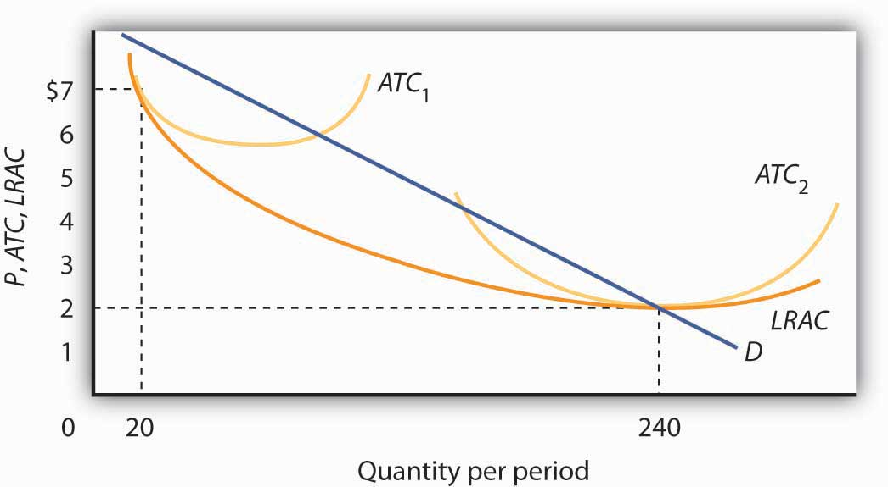

Monopoly is at the opposite end of the spectrum of market models from perfect competition. A monopolyA firm that that is the only producer of a good or service for which there are no close substitutes and for which entry by potential rivals is prohibitively difficult. firm has no rivals. It is the only firm in its industry. There are no close substitutes for the good or service a monopoly produces. Not only does a monopoly firm have the market to itself, but it also need not worry about other firms entering. In the case of monopoly, entry by potential rivals is prohibitively difficult.
A monopoly does not take the market price as given; it determines its own price. It selects from its demand curve the price that corresponds to the quantity the firm has chosen to produce in order to earn the maximum profit possible. The entry of new firms, which eliminates profit in the long run in a competitive market, cannot occur in the monopoly model.
A firm that sets or picks price based on its output decision is called a price setterA firm that sets or picks price based on its output decision.. A firm that acts as a price setter possesses monopoly powerThe ability to act as a price setter.. We shall see in the next chapter that monopolies are not the only firms that have this power; however, the absence of rivals in monopoly gives it much more price-setting power.
As was the case when we discussed perfect competition in the previous chapter, the assumptions of the monopoly model are rather strong. In assuming there is one firm in a market, we assume there are no other firms producing goods or services that could be considered part of the same market as that of the monopoly firm. In assuming blocked entry, we assume, for reasons we will discuss below, that no other firm can enter that market. Such conditions are rare in the real world. As always with models, we make the assumptions that define monopoly in order to simplify our analysis, not to describe the real world. The result is a model that gives us important insights into the nature of the choices of firms and their impact on the economy.
Why are some markets dominated by single firms? What are the sources of monopoly power? Economists have identified a number of conditions that, individually or in combination, can lead to domination of a market by a single firm and create barriers that prevent the entry of new firms.
Barriers to entryCharacteristic of a particular market that block the entry of new firms in a monopoly market. are characteristics of a particular market that block new firms from entering it. They include economies of scale, special advantages of location, high sunk costs, a dominant position in the ownership of some of the inputs required to produce the good, and government restrictions. These barriers may be interrelated, making entry that much more formidable. Although these barriers might allow one firm to gain and hold monopoly control over a market, there are often forces at work that can erode this control.
Scale economies and diseconomies define the shape of a firm’s long-run average cost (LRAC) curve as it increases its output. If long-run average cost declines as the level of production increases, a firm is said to experience economies of scale.
A firm that confronts economies of scale over the entire range of outputs demanded in its industry is a natural monopolyA firm that confronts economies of scale over the entire range of outputs demanded in its industry.. Utilities that distribute electricity, water, and natural gas to some markets are examples. In a natural monopoly, the LRAC of any one firm intersects the market demand curve where long-run average costs are falling or are at a minimum. If this is the case, one firm in the industry will expand to exploit the economies of scale available to it. Because this firm will have lower unit costs than its rivals, it can drive them out of the market and gain monopoly control over the industry.
Suppose there are 12 firms, each operating at the scale shown by ATC1 (average total cost) in Figure 10.1 "Economies of Scale Lead to Natural Monopoly". A firm that expanded its scale of operation to achieve an average total cost curve such as ATC2 could produce 240 units of output at a lower cost than could the smaller firms producing 20 units each. By cutting its price below the minimum average total cost of the smaller plants, the larger firm could drive the smaller ones out of business. In this situation, the industry demand is not large enough to support more than one firm. If another firm attempted to enter the industry, the natural monopolist would always be able to undersell it.
Figure 10.1 Economies of Scale Lead to Natural Monopoly
A firm with falling LRAC throughout the range of outputs relevant to existing demand (D) will monopolize the industry. Here, one firm operating with a large plant (ATC2) produces 240 units of output at a lower cost than the $7 cost per unit of the 12 firms operating at a smaller scale (ATC1), and producing 20 units of output each.
Sometimes monopoly power is the result of location. For example, sellers in markets isolated by distance from their nearest rivals have a degree of monopoly power. The local movie theater in a small town has a monopoly in showing first-run movies. Doctors, dentists, and mechanics in isolated towns may also be monopolists.
The greater the cost of establishing a new business in an industry, the more difficult it is to enter that industry. That cost will, in turn, be greater if the outlays required to start a business are unlikely to be recovered if the business should fail.
Suppose, for example, that entry into a particular industry requires extensive advertising to make consumers aware of the new brand. Should the effort fail, there is no way to recover the expenditures for such advertising. An expenditure that has already been made and that cannot be recovered is called a sunk costAn expenditure that has already been made and that cannot be recovered..
If a substantial fraction of a firm’s initial outlays will be lost upon exit from the industry, exit will be costly. Difficulty of exit can make for difficulty of entry. The more firms have to lose from an unsuccessful effort to penetrate a particular market, the less likely they are to try. The potential for high sunk costs could thus contribute to the monopoly power of an established firm by making entry by other firms more difficult.
In very few cases the source of monopoly power is the ownership of strategic inputs. If a particular firm owns all of an input required for the production of a particular good or service, then it could emerge as the only producer of that good or service.
The Aluminum Company of America (ALCOA) gained monopoly power through its ownership of virtually all the bauxite mines in the world (bauxite is the source of aluminum). The International Nickel Company of Canada at one time owned virtually all the world’s nickel. De Beers acquired rights to nearly all the world’s diamond production, giving it enormous power in the market for diamonds. With new diamond supplies in Canada, Australia, and Russia being developed and sold independently of DeBeers, however, this power has declined, and today DeBeers controls a substantially smaller percentage of the world’s supply.
Another important basis for monopoly power consists of special privileges granted to some business firms by government agencies. State and local governments have commonly assigned exclusive franchises—rights to conduct business in a specific market—to taxi and bus companies, to cable television companies, and to providers of telephone services, electricity, natural gas, and water, although the trend in recent years has been to encourage competition for many of these services. Governments might also regulate entry into an industry or a profession through licensing and certification requirements. Governments also provide patent protection to inventors of new products or production methods in order to encourage innovation; these patents may afford their holders a degree of monopoly power during the 17-year life of the patent.
Patents can take on extra importance when network effects are present. Network effectsSituations where products become more useful the larger the number of users of the product. arise in situations where products become more useful the larger the number of users of the product. For example, one advantage of using the Windows computer operating system is that so many other people use it. That has advantages in terms of sharing files and other information.
What is the source of monopoly power—if any—in each of the following situations?
Matty Moroun was quietly enjoying his monopoly power. He is the owner of the 80-year-old Ambassador Bridge, a suspension bridge that is the only connection between Detroit, Michigan, and Windsor, Ontario. He purchased the bridge from Warren Buffet in 1974 for $30 million. Forbes estimates that it is now worth more than $500 million. Mr. Moroun oversees the artery over which $100 billion of goods—one-quarter of U.S. trade with Canada and 40% of all truck shipments from the United States—make their way between the two countries.
Despite complaints of high and rising tolls—he has more than doubled fares for cars and tripled fares for trucks—Mr. Moroun has so far held on. Kenneth Davies, a lawyer who often battles Mr. Moroun in court, is a grudging admirer. “He’s very intelligent and very aggressive. His avarice and greed are just American capitalism at work,” he told Forbes.
What are the sources of his monopoly power? With the closest alternative bridge across the Detroit River two hours away, location is a big plus. In addition, the cost of creating a new transportation link is high. A group that is considering converting an old train tunnel to truck use and boring a new train tunnel some distance away is facing a $600 million price tag for the project. In addition to having entry by potential competitors blocked, he has a status not shared by most other monopolists. The Michigan Supreme Court ruled in 2008 that the city of Detroit cannot regulate his business because of the bridge’s international nature. Canadian courts have barred any effort by Canadian authorities to regulate him. He will not even allow inspectors from the government of the United States to set foot on his bridge.
Increased security since 9/11 has caused delays, but Mr. Moroun has eased these by increasing his own spending on security to $50,000 a week and by building additional inspection stations and gifting them to the U.S. inspection agency, the General Services Administration. Even a monopolist understands the importance of keeping his customers content! Mr. Maroun has even proposed building a new bridge just next to the existing bridge.
Because of the terrorist attacks on 9/11 and the concern about vulnerability and security, calls to deal with this monopoly have increased. Some people argue that the government should buy what is the most important single international arterial in North America, while others have called for more regulatory oversight. The Canadian and Michigan governments have been discussing the possibility of building a publicly funded bridge nearby. Time will tell whether Mr. Moroun can hold onto what Forbes writers Stephane Fitch and Joann Muller dubbed “the best monopoly you never heard of.”
Sources: Stephane Fitch and Joann Muller, “The Troll Under the Bridge,” Forbes 174:10 (November 15, 2004): 134–139; John Gallagher, “Plan Uses Parkway to Ease Ambassador Bridge Traffic,” Detroit Free Press, May 1, 2008; “State Supreme Court Sides With Ambassador Bridge in Dispute,” Detroit News, May 7, 2008; and “A Floating Detroit River Bridge?” The Toronto Star, July 30, 2010.